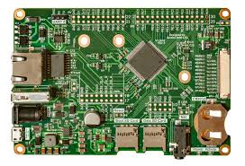

Capitolo 1
Indice

Storia:Codifica AudioL'informatica ha radici antiche, ma la sua forma moderna nasce con l'invenzione del computer digitale elettronico nel XX secolo. Primi passi cruciali includono la macchina analitica di Babbage (un progetto concettuale), i lavori pionieristici di Ada Lovelace (considerata la prima programmatrice), e lo sviluppo dei primi computer elettronici come l'ENIAC e il Colossus durante la Seconda Guerra Mondiale. Negli anni successivi, l'invenzione del transistor e poi del microprocessore ha portato a una miniaturizzazione e a un aumento esponenziale della potenza di calcolo, dando vita all'era dei personal computer e di internet. L'informatica si è evoluta da un campo ristretto a una disciplina pervasiva, che influenza quasi ogni aspetto della vita moderna.
scienza: Codifica AudioL'informatica è una scienza multidisciplinare che si concentra sullo studio teorico e pratico dell'informazione e del calcolo automatico. Comprende diversi ambiti, tra cui:
Codifica dell'audio: si occupa della quantificazione, memorizzazione e trasmissione dell'informazione.
Algoritmi e strutture dati: si concentra sulla progettazione di algoritmi efficienti e sulla gestione efficiente dei dati.
Archittetura del computer:studia la progettazione e l'organizzazione dei sistemi informatici.
Sistemi operativi: si occupa della gestione delle risorse di un computer.
linguaggi di programmazione: studia i linguaggi utilizzati per dare istruzioni ai computer.
intelligenza Artificiale: si concentra sulla creazione di sistemi in grado di simulare l'intelligenza umana.
Database: si occupa della progettazione e gestione di grandi quantità di dati.
Reti di computer: studia la progettazione e la gestione delle reti di computer.
Aspetti +/-:
Aspetti positivi: L'informatica ha portato enormi progressi in molti settori, migliorando la comunicazione, la sanità, l'istruzione, l'economia e molti altri. Ha reso possibile l'accesso a una vasta quantità di informazioni, ha semplificato molte attività quotidiane e ha creato nuove opportunità di lavoro e di innovazione.
Aspetti negativi: L'informatica presenta anche alcuni aspetti negativi. La dipendenza dalla tecnologia può portare a problemi di salute fisica e mentale. La diffusione di informazioni false e la violazione della privacy sono preoccupazioni importanti. L'automazione può portare alla perdita di posti di lavoro e alla disuguaglianza economica. La sicurezza informatica è una sfida costante, con la minaccia di attacchi informatici e di furto di dati.
comportamento in rete: Il comportamento in rete è fortemente influenzato dall'informatica. Internet e le tecnologie digitali hanno creato nuove forme di interazione sociale, ma anche nuove sfide etiche e sociali. La diffusione di contenuti dannosi, il cyberbullismo, la diffusione di disinformazione e la polarizzazione politica sono alcuni dei problemi che emergono nel contesto della rete. È importante promuovere un uso responsabile e consapevole delle tecnologie digitali, rispettando gli altri e promuovendo un ambiente online sicuro e inclusivo.